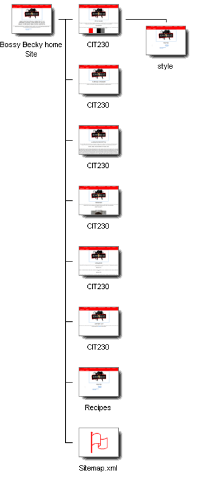
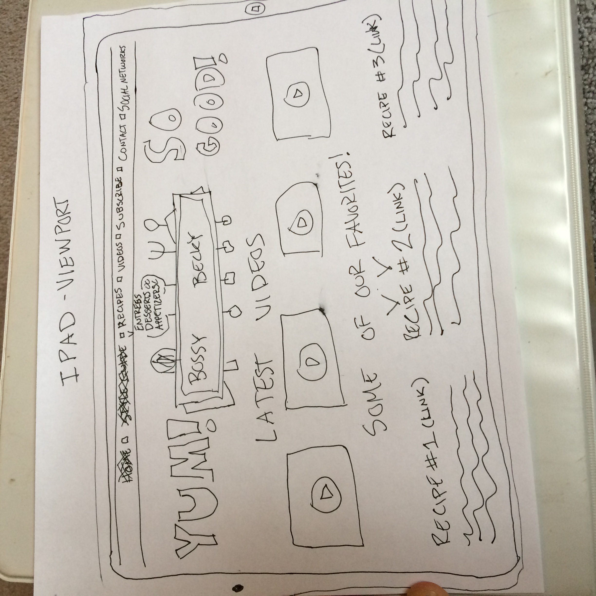
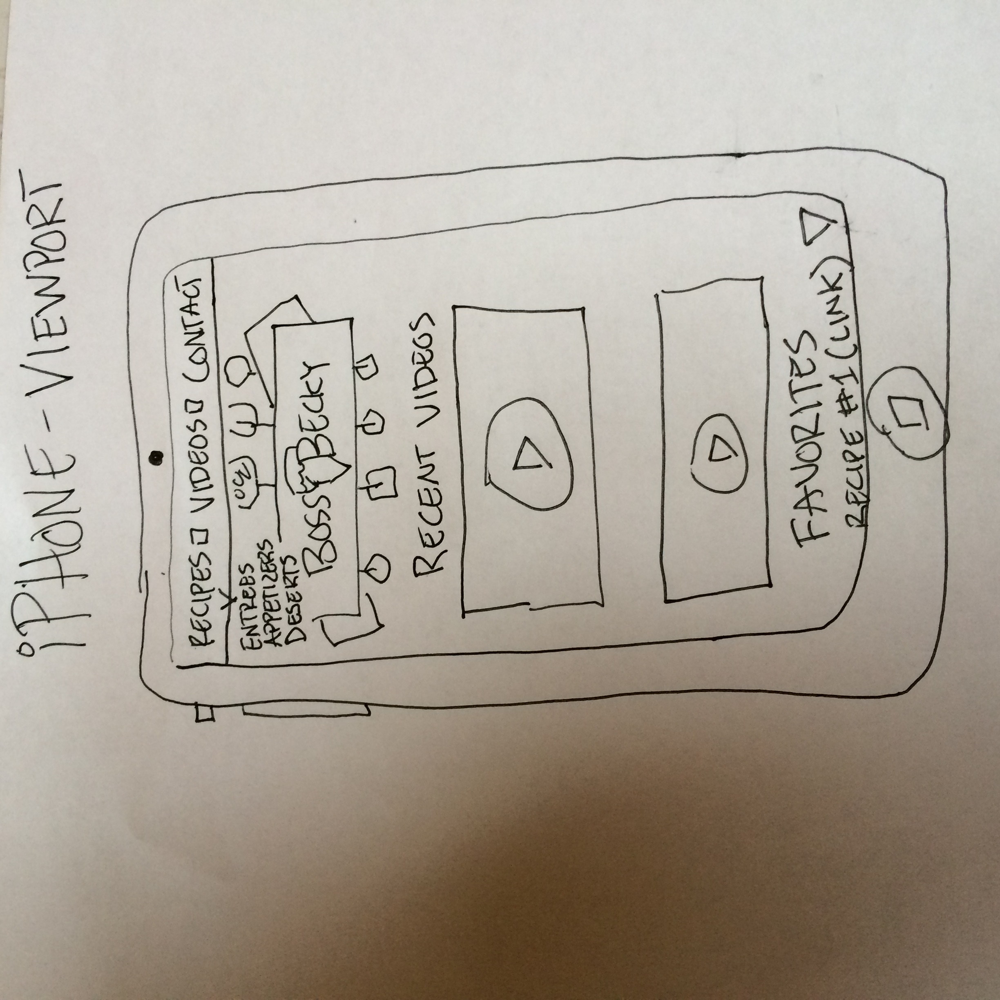
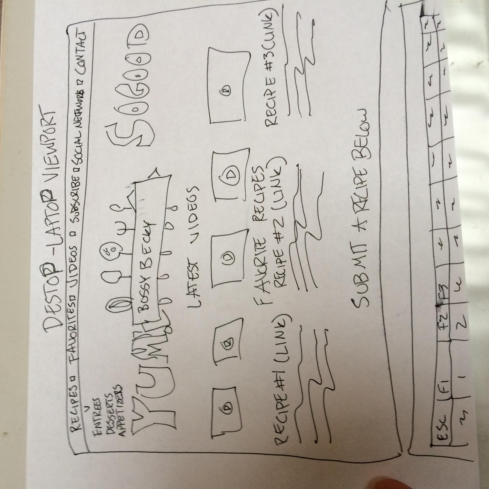

Typography
For our typography focuses, we're going to be using external fonts from Google's repositories. Namely we'll be using Roboto 100 thin, 300, and 400 in addition to Open Sans 700. The links to these fonts are inside the css file. Click here to view the css file.
Navigation
For the navigation bar on the site, we're going to be using a responsive bar that is stuck to the top of the screen. It also has hover and loading properties. It is in coordinance with our fonts and color schemes. Click here to view the css file to see the implementation of this style of navigation.
Responsiveness
We plan on building out to support primary iOS devices and desktop viewports. Currently we are using the "em" designation for sizing all of the content so that it can properly scale with any size. Later we will build out specific css and redirect pages that gauge the screen px density and redirect accordingly so as to maximize our viewers experience and create a pleasurable experience on the site.
Visual Sitemap
Device Sketches: iPad, iPhone, Laptop

